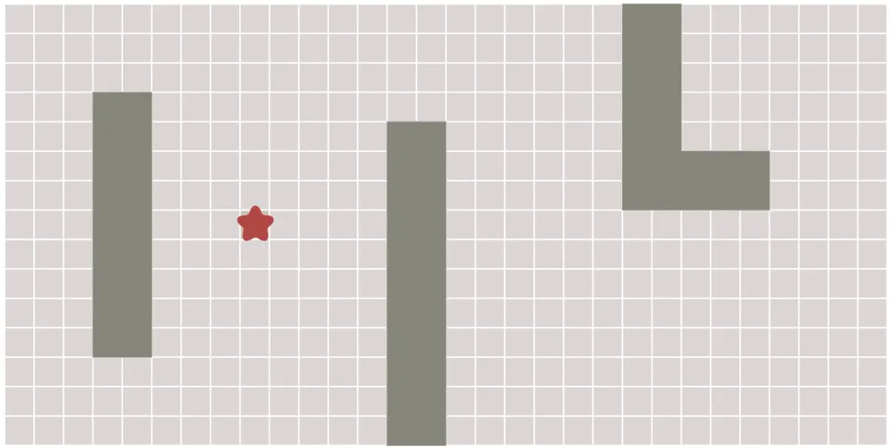
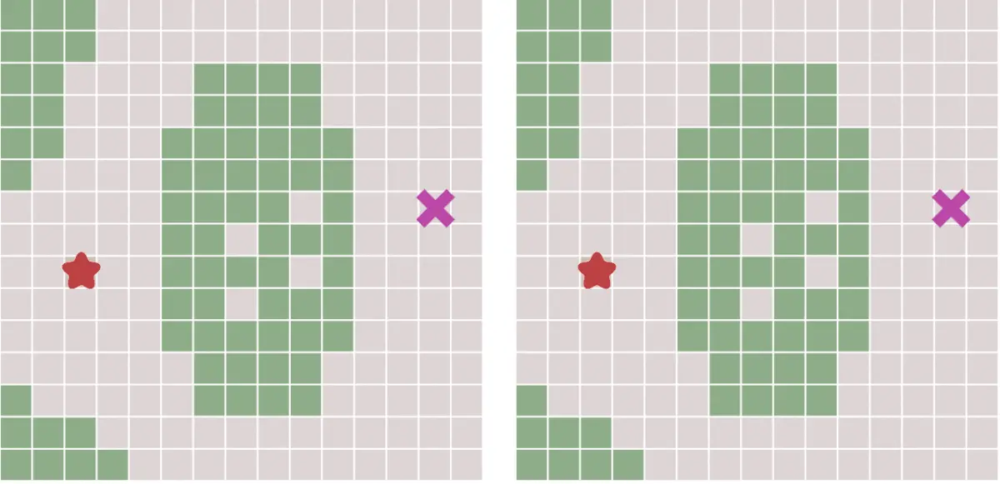
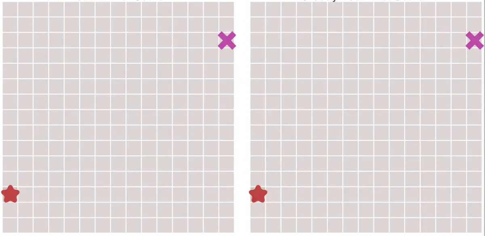
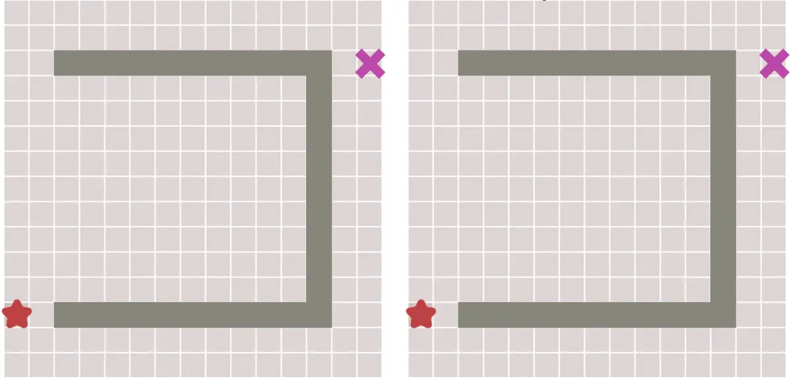

A*算法是一种很常用的路径查找和图形遍历算法。它有较好的性能和准确度。A*算法最初发表于1968年，由Stanford研究院的Peter Hart, Nils Nilsson以及Bertram Raphael发表。它可以被认为是Dijkstra算法的扩展。
本文动图、内容来源：阿里云云栖号
路径规划的一些算法
- 广度优先搜索算法
BFS（Breadth first search）从起点开始，首先遍历起点周围临近点，然后在遍历已经遍历过的点未访问过的临近点，逐步向外扩散，直到找到终点。BFS以广度为优先级进行搜索。

- dijkstra算法
Dijkstra算法用来寻找图形中节点之间的最短路径。Dijkstra算法可以视作BFS算法的带权版本，增加了路径代价的概念。算法执行过程中，每次都从优先级队列中选出代价最小的作为下一个点，直到到达终点。

- 最佳优先搜索
在一些情况下，如果我们可以预先计算出每个节点到终点的距离，则我们可以利用这个信息更快的到达终点。
与Dijkstra算法类似，我们也使用一个优先队列，但此时以每个节点到达终点的距离作为优先级，每次始终选取到终点移动代价最小（离终点最近）的节点作为下一个遍历的节点。这种算法称之为最佳优先（Best First）算法。

但是这样也会出现不良情况，如果起点和终点之间存在障碍物，则最佳优先算法找到的很可能不是最短路径，下图描述了这种情况。

A*算法
A*算法实际上是综合上面这些算法的特点于一身的。
A*算法通过下面这个函数来计算每个节点的优先级。
f(n)=g(n)+h(n)
在上式中：
f(n)为节点n的综合优先级；g(n)为节点n距离起点的代价；h(n)为节点n距离终点的预计代价。
上式即为A*算法的启发函数。A*算法在运算过程中，每次从优先队列中选取f(n)值最小（优先级最高）的节点作为下一个待遍历的节点。
另外，A*算法使用两个集合来表示待遍历的节点，与已经遍历过的节点，这通常称之为open_set和close_set。完整的A*算法描述如下：
1 | * 初始化open_set和close_set； |
上面已经提到，启发函数会影响A*算法的行为。
- 在极端情况下，当启发函数h(n)始终为0，则将由g(n)决定节点的优先级，此时算法就退化成了Dijkstra算法。
- 如果h(n)始终小于等于节点n到终点的代价，则A*算法保证一定能够找到最短路径。但是当h(n)的值越小，算法将遍历越多的节点，也就导致算法越慢。
- 如果h(n)完全等于节点n到终点的代价，则A*算法将找到最佳路径，并且速度很快。可惜的是，并非所有场景下都能做到这一点。因为在没有达到终点之前，我们很难确切算出距离终点还有多远。
- 如果h(n)的值比节点n到终点的代价要大，则A*算法不能保证找到最短路径，不过此时会很快。
- 在另外一个极端情况下，如果h(n)相较于g(n)大很多，则此时只有h(n)产生效果，这也就变成了最佳优先搜索。
由上面这些信息我们可以知道，通过调节启发函数我们可以控制算法的速度和精确度。因为在一些情况，我们可能未必需要最短路径，而是希望能够尽快找到一个路径即可。这也是A*算法比较灵活的地方。
对于网格形式的图，有以下这些启发函数可以使用：
- 如果图形中只允许朝上下左右四个方向移动，则可以使用曼哈顿距离（Manhattan distance）。
C为移动代价
1 | def cost(node): |
- 如果图形中允许朝八个方向移动，则可以使用对角距离。
1 | def cost(node): |
- 如果图形中允许朝任何方向移动，则可以使用欧几里得距离（Euclidean distance）。
局限性：
虽然 Ａ ＊ 算法能有效解决最短路径问题，但其存在易陷入“死循环”、规划路径折点多、在动态环境中规划效果不佳等问题。